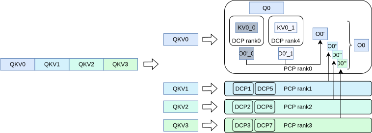

[主标题占位] 技术分享演示
分享人：[姓名占位]
@vLLM-Ascend Team
目录
- 01 核心思想与全局流程（总览版式）
- 02 架构图解与热点下钻（图解版式）
- 03 分步执行流程（Stepper 版式）
- 04 交互式动态沙盘（卡片封装版式）
- 05 适配现状与未来规划（总结版式）
核心特性 A（如 PCP）
算力切分 · 降 TTFT
一句话概括：切分 Prefill 输入序列，多卡并行计算降低首字时延。
核心特性 B（如 DCP）
显存切分 · 提吞吐
一句话概括：沿序列维度交错分片 KV Cache，消除冗余存储并提升最大上下文。
01 · INPUT
序列切分
Global Batch → Local Segments
02 · STORAGE
KV 交错映射
Virtual Block & Slot Mapping
03 · COMPUTE
通信与注意力
Q/KV Gather & Local Attention
04 · MERGE
归并与恢复
LSE Combine & Order Restore

flowchart LR
S1["1. Batch 切分"] --> S2["2. 跨卡通信同步"] --> S3["3. 核心算子计算"] --> S4["4. 结果归并还原"]
Step 1：将全局请求切分为本地虚拟请求段
Global Input [T_global, D] → Local Segments [T_local, D]
Step 2：在通信组内聚合 Q Heads 或历史 KV
all_gather_async / all_to_all_single 与主流计算重叠
Step 3：按 LSE 加权归并局部输出并恢复全局顺序
w_j = exp(L_j - max L) → hidden_restore_idx
| 架构 / 后端 | Chunked Prefill | Prefix Caching | Graph Mode | Speculative | PD 分离 |
|---|---|---|---|---|---|
| Backend A (示例) | |||||
| Backend B (示例) | |||||
| Backend C (示例) |
已支持 部分支持 未支持
适用场景
中长序列降 TTFT 选 PCP；超长序列扩容量选 DCP。
核心架构
MRV2 虚拟请求切分 + Mixin 化后端与 Triton 融合通信。
后续规划
混合线性层 Decode 切分、算子进一步融合与动态 CP。